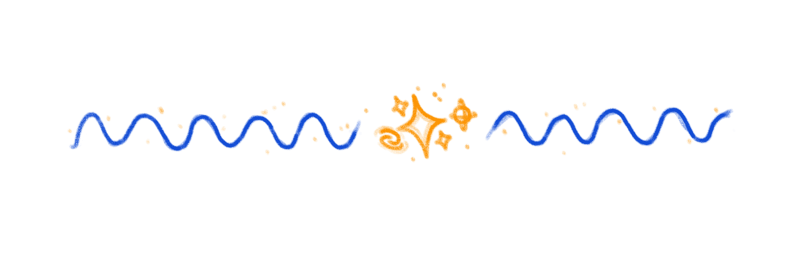

↓ Ir direto para os futuros Recursos ↓
O que é a AstroLog?
A AstroLog é um projeto desenvolvido por alunos de ensino médio apaixonados por astronomia olímpica. O projeto tem como objetivo disponibilizar conteúdos essenciais para a formação em astronomia e astrofísica necessárias para competir em olimpíadas de astronomia de alto nível como a OBA, as seletivas (TSA e Treinamentos IOAA/OLAA) e as olimpíadas regionais.
Qual o nosso objetivo?
A equipe da AstroLog vai buscar desenvolver materiais ilustrados e guias. No mundo olímpico da astronomia já há diversos materiais de estudo, por isso a nossa pegada vai ser um pouco diferente: Deduções ilustradas e explicadas, conceitos básicos explicados, um mapa de constelaçõese um guia apontando materiais e outros projetos que podem ajudar demais!

Deduções
Deduções são nada menos nada mais que as contas que fizeram uma determinada lei ou fórmula surgir, elas são essenciais para entender mais profundamente conceitos, fórmulas e leis. Elas ajudam a gravar na mente e aprender. As deduções podem salvar você, aluno, de questões difíceis que exigem criatividade ou caso você tenha esquecido de alguma fórmula. As deduções serão o charme da AstroLog. Serão todas desenhadas a mão, passo a passo, com imagens interativas: Se você não entender algo ou não souber o valor de uma constante será só clicar na constante e aparecerá uma janela com o valor da constante e uma breve explicação. Na aba de temas terão desenhos clicáveis ilustrando cada tema. Se tiver alguma dúvida ou sugestão envie pelo formulário em Dúvidas.
Mapa de Constelações
Também pretendemos disponibilizar uma seção com as 88 constelações, nessa seção você, aluno, poderá filtrar pelas constelações e analisar conceitos associados a elas: principais estrelas, declinações, magnitudes, classificações e mais. Será disponibilizado dois diferentes tipos de constelações: Desenhadas à mão e mapas gráficos mais precisos.
Futuros Recursos da AstroLog - Síntese
- Deduções ilustradas passo a passo;
- Um guia de estudo para OBA e olimpíadas internacionais;
- Mapa de constelações;
- Nosso objetivo é democratizar e facilitar o estudo avançado de astronomia para olimpíadas.